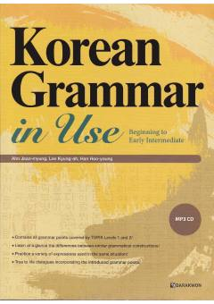

KGKoreys tili grammatikasini o'rganish uchun mo'ljallangan mukammal qo'llanma.
Ushbu kitob koreys tilini o'rganuvchilar uchun boshlang'ich va o'rta darajadagi grammatik qoidalarni qamrab olgan qo'llanmadir. Unda TOPIK 1 va 2-darajalar uchun zarur bo'lgan barcha grammatik tuzilmalar, misollar va amaliy mashqlar keltirilgan.